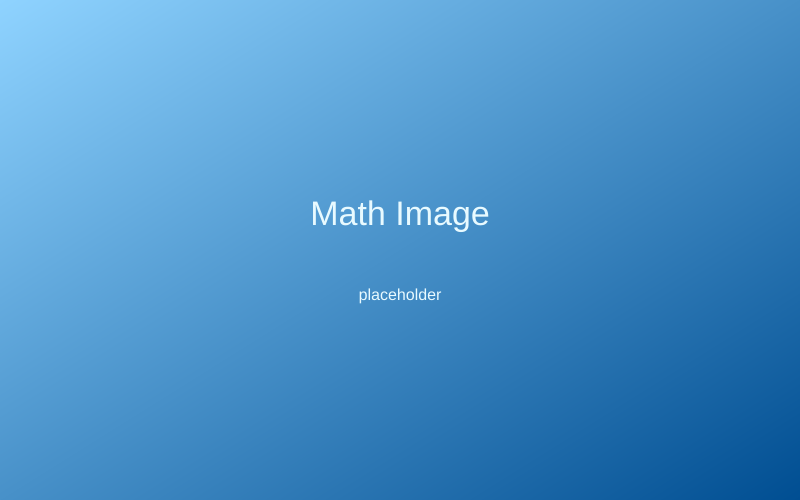

Welcome to JIBC Math
Here, you will find material to help with College Algebra and PreCalculus. In the videos page, you will find videos lectures by BC students about some notoriously challenging topics for each class. There is also some instructional videos for the teaching aids that have been created in the Teaching aids page.

Featured images

Who is this for
These materials are for students, specifically at Bridgewater College, to have access to supplemental material to aid their mastery of topics in math. This is ideal for anyone struggling in their courses or may have missed a lecture. Out number 1 goal is to focus on a good understanding of the fundametals, that is why prerequisites are given for each topic and brief reviews of the required material is given before going onto new ideas. We plan to add more content in the future, and aim to work closely with Bridgewater students and staff. To leave reccomendations on what to do next, visit the contact us page.